Inicio › UT4
Qué se trabaja
- Sesiones y cookies; login con
password_hash. - Roles, control de acceso y protección frente a CSRF.
Pruébalo en el laboratorio
UT4 · Contraseñas: hash y verificaciónUT4 · Token CSRF de un solo formulario
Prueba también la demo de localStorage.
Figuras y capturas
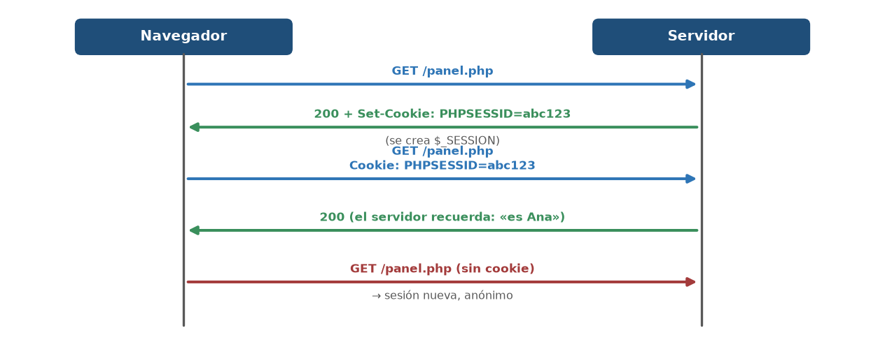
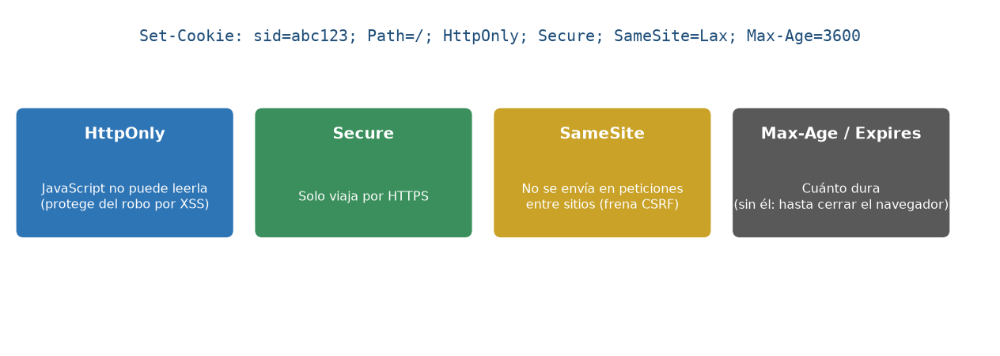
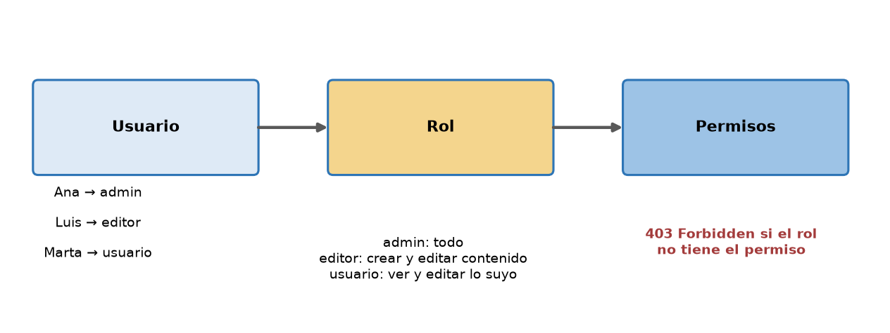
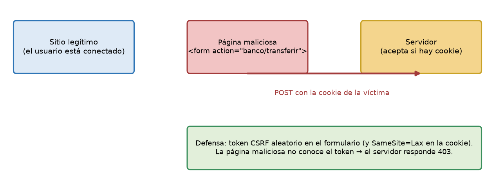
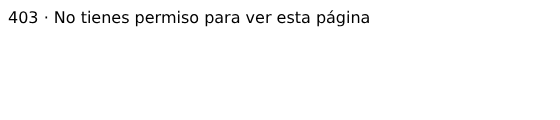
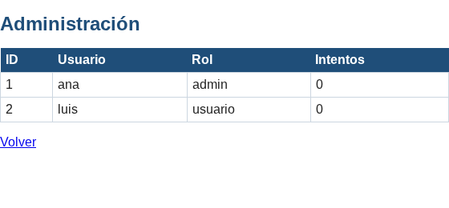
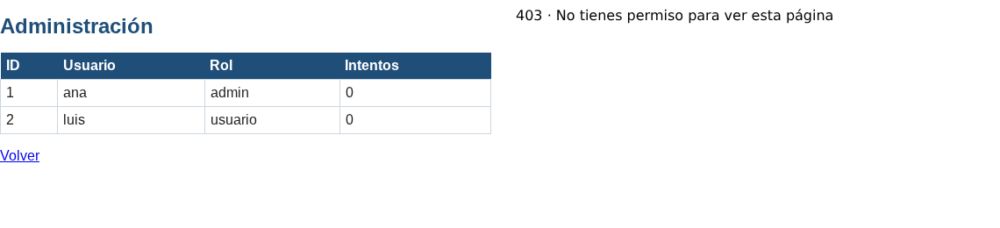
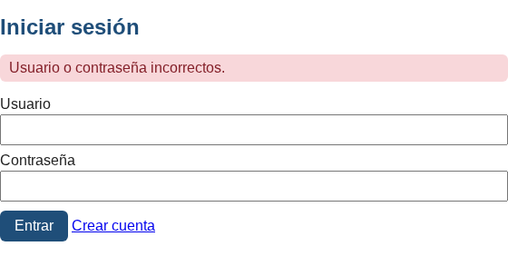
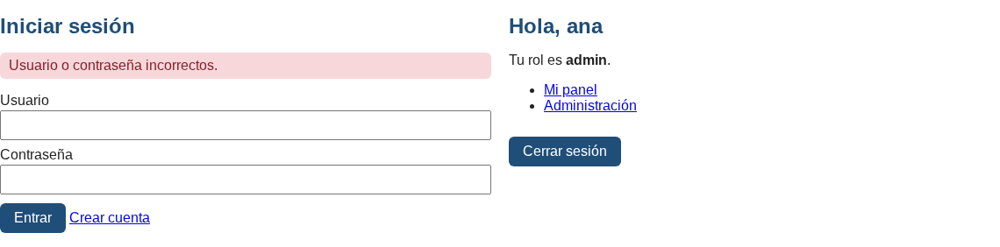
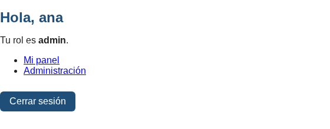
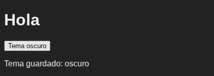